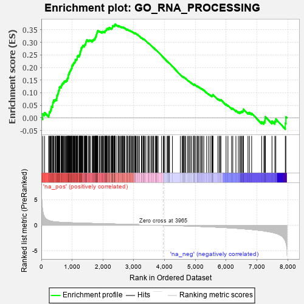
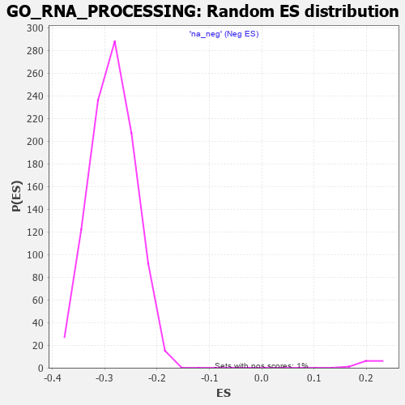

| | | Dataset | 7d |
| Phenotype | NoPhenotypeAvailable |
| Upregulated in class | na_pos |
| GeneSet | GO_RNA_PROCESSING |
| Enrichment Score (ES) | 0.37210792 |
| Normalized Enrichment Score (NES) | 1.7535979 |
| Nominal p-value | 0.0 |
| FDR q-value | 0.13731827 |
| FWER p-Value | 0.951 |
Table: GSEA Results Summary

Fig 1: Enrichment plot: GO_RNA_PROCESSING
Profile of the Running ES Score & Positions of GeneSet Members on the Rank Ordered List
| PROBE | GENE SYMBOL | GENE_TITLE | RANK IN GENE LIST | RANK METRIC SCORE | RUNNING ES | CORE ENRICHMENT | | 1 | PCBP4 | | | 44 | 2.875 | 0.0167 | Yes |
| 2 | ZMAT2 | | | 104 | 1.587 | 0.0214 | Yes |
| 3 | SRSF9 | | | 240 | 0.950 | 0.0112 | Yes |
| 4 | THADA | | | 253 | 0.931 | 0.0169 | Yes |
| 5 | LAGE3 | | | 257 | 0.914 | 0.0236 | Yes |
| 6 | DPH3 | | | 287 | 0.844 | 0.0264 | Yes |
| 7 | CCNH | | | 301 | 0.817 | 0.0311 | Yes |
| 8 | QTRT2 | | | 316 | 0.792 | 0.0354 | Yes |
| 9 | ZMAT5 | | | 326 | 0.774 | 0.0403 | Yes |
| 10 | BOP1 | | | 330 | 0.768 | 0.0459 | Yes |
| 11 | ELP4 | | | 365 | 0.734 | 0.0472 | Yes |
| 12 | LARP7 | | | 369 | 0.731 | 0.0525 | Yes |
| 13 | RRP15 | | | 372 | 0.722 | 0.0579 | Yes |
| 14 | POP1 | | | 376 | 0.720 | 0.0631 | Yes |
| 15 | RPP25 | | | 401 | 0.699 | 0.0654 | Yes |
| 16 | RRP8 | | | 403 | 0.699 | 0.0708 | Yes |
| 17 | CPSF2 | | | 440 | 0.666 | 0.0713 | Yes |
| 18 | LEO1 | | | 463 | 0.655 | 0.0735 | Yes |
| 19 | LARP6 | | | 498 | 0.630 | 0.0740 | Yes |
| 20 | PHRF1 | | | 500 | 0.629 | 0.0788 | Yes |
| 21 | MYOD1 | | | 504 | 0.628 | 0.0833 | Yes |
| 22 | THOC1 | | | 507 | 0.627 | 0.0879 | Yes |
| 23 | SF3B4 | | | 521 | 0.622 | 0.0910 | Yes |
| 24 | WDR12 | | | 530 | 0.620 | 0.0948 | Yes |
| 25 | PRCC | | | 543 | 0.614 | 0.0981 | Yes |
| 26 | JMJD6 | | | 553 | 0.613 | 0.1017 | Yes |
| 27 | CSTF1 | | | 557 | 0.610 | 0.1061 | Yes |
| 28 | WDR55 | | | 569 | 0.605 | 0.1093 | Yes |
| 29 | CCNB1 | | | 581 | 0.601 | 0.1126 | Yes |
| 30 | DDX56 | | | 584 | 0.600 | 0.1170 | Yes |
| 31 | POP5 | | | 585 | 0.599 | 0.1217 | Yes |
| 32 | SNIP1 | | | 604 | 0.593 | 0.1240 | Yes |
| 33 | PLRG1 | | | 644 | 0.579 | 0.1234 | Yes |
| 34 | RBM4 | | | 649 | 0.576 | 0.1274 | Yes |
| 35 | PARN | | | 660 | 0.572 | 0.1305 | Yes |
| 36 | NOC4L | | | 671 | 0.569 | 0.1337 | Yes |
| 37 | CDK7 | | | 686 | 0.564 | 0.1362 | Yes |
| 38 | PHF5A | | | 701 | 0.560 | 0.1388 | Yes |
| 39 | SF3B3 | | | 729 | 0.552 | 0.1396 | Yes |
| 40 | LSM8 | | | 733 | 0.549 | 0.1434 | Yes |
| 41 | UTP4 | | | 751 | 0.545 | 0.1455 | Yes |
| 42 | CPSF6 | | | 778 | 0.538 | 0.1463 | Yes |
| 43 | GAR1 | | | 806 | 0.530 | 0.1469 | Yes |
| 44 | IMP4 | | | 818 | 0.526 | 0.1496 | Yes |
| 45 | PPWD1 | | | 841 | 0.521 | 0.1508 | Yes |
| 46 | PPIE | | | 842 | 0.521 | 0.1548 | Yes |
| 47 | SAP18 | | | 850 | 0.519 | 0.1580 | Yes |
| 48 | NOL6 | | | 870 | 0.514 | 0.1595 | Yes |
| 49 | WDR75 | | | 874 | 0.513 | 0.1631 | Yes |
| 50 | POP7 | | | 876 | 0.511 | 0.1670 | Yes |
| 51 | CMTR1 | | | 877 | 0.511 | 0.1710 | Yes |
| 52 | ADAT3 | | | 890 | 0.508 | 0.1733 | Yes |
| 53 | NSUN2 | | | 901 | 0.506 | 0.1760 | Yes |
| 54 | NHP2 | | | 906 | 0.505 | 0.1794 | Yes |
| 55 | PRPF3 | | | 917 | 0.503 | 0.1820 | Yes |
| 56 | SF3A2 | | | 928 | 0.500 | 0.1846 | Yes |
| 57 | CWC22 | | | 938 | 0.498 | 0.1873 | Yes |
| 58 | WDR3 | | | 951 | 0.495 | 0.1896 | Yes |
| 59 | CTR9 | | | 964 | 0.492 | 0.1919 | Yes |
| 60 | ZPR1 | | | 967 | 0.491 | 0.1955 | Yes |
| 61 | BMS1 | | | 984 | 0.487 | 0.1972 | Yes |
| 62 | NOP9 | | | 993 | 0.485 | 0.1999 | Yes |
| 63 | SSU72 | | | 996 | 0.485 | 0.2035 | Yes |
| 64 | DEDD2 | | | 999 | 0.484 | 0.2070 | Yes |
| 65 | CPSF1 | | | 1005 | 0.482 | 0.2101 | Yes |
| 66 | PWP2 | | | 1030 | 0.477 | 0.2107 | Yes |
| 67 | ISY1 | | | 1036 | 0.476 | 0.2137 | Yes |
| 68 | CTU2 | | | 1044 | 0.475 | 0.2165 | Yes |
| 69 | RBM15 | | | 1057 | 0.473 | 0.2186 | Yes |
| 70 | WDR46 | | | 1074 | 0.468 | 0.2202 | Yes |
| 71 | NCBP3 | | | 1087 | 0.466 | 0.2223 | Yes |
| 72 | FCF1 | | | 1100 | 0.463 | 0.2243 | Yes |
| 73 | RRP12 | | | 1102 | 0.463 | 0.2278 | Yes |
| 74 | DDX47 | | | 1103 | 0.463 | 0.2314 | Yes |
| 75 | UTP15 | | | 1135 | 0.457 | 0.2309 | Yes |
| 76 | RBM42 | | | 1145 | 0.455 | 0.2333 | Yes |
| 77 | UBL5 | | | 1162 | 0.452 | 0.2348 | Yes |
| 78 | DDX27 | | | 1163 | 0.452 | 0.2383 | Yes |
| 79 | GRSF1 | | | 1164 | 0.452 | 0.2418 | Yes |
| 80 | ERCC3 | | | 1173 | 0.451 | 0.2443 | Yes |
| 81 | CLP1 | | | 1182 | 0.450 | 0.2467 | Yes |
| 82 | ELP3 | | | 1223 | 0.442 | 0.2450 | Yes |
| 83 | NSUN5 | | | 1230 | 0.442 | 0.2476 | Yes |
| 84 | CPSF3 | | | 1237 | 0.440 | 0.2503 | Yes |
| 85 | PUS10 | | | 1249 | 0.438 | 0.2523 | Yes |
| 86 | DUS4L | | | 1254 | 0.438 | 0.2552 | Yes |
| 87 | WDR36 | | | 1260 | 0.437 | 0.2579 | Yes |
| 88 | PPIL1 | | | 1262 | 0.437 | 0.2612 | Yes |
| 89 | CDC73 | | | 1265 | 0.436 | 0.2643 | Yes |
| 90 | NOB1 | | | 1284 | 0.433 | 0.2654 | Yes |
| 91 | UTP18 | | | 1286 | 0.432 | 0.2686 | Yes |
| 92 | DKC1 | | | 1292 | 0.431 | 0.2713 | Yes |
| 93 | TPRKB | | | 1296 | 0.430 | 0.2743 | Yes |
| 94 | THOC3 | | | 1297 | 0.430 | 0.2777 | Yes |
| 95 | THOC6 | | | 1316 | 0.426 | 0.2786 | Yes |
| 96 | UTP25 | | | 1319 | 0.425 | 0.2817 | Yes |
| 97 | SNRPA | | | 1340 | 0.422 | 0.2824 | Yes |
| 98 | SF3A1 | | | 1346 | 0.420 | 0.2850 | Yes |
| 99 | DTWD2 | | | 1354 | 0.418 | 0.2873 | Yes |
| 100 | DDX51 | | | 1397 | 0.411 | 0.2851 | Yes |
| 101 | WDR4 | | | 1399 | 0.410 | 0.2881 | Yes |
| 102 | CSTF3 | | | 1408 | 0.409 | 0.2903 | Yes |
| 103 | LSM4 | | | 1426 | 0.405 | 0.2912 | Yes |
| 104 | RBM10 | | | 1430 | 0.404 | 0.2940 | Yes |
| 105 | PTBP1 | | | 1441 | 0.402 | 0.2958 | Yes |
| 106 | LSM6 | | | 1444 | 0.402 | 0.2987 | Yes |
| 107 | WBP11 | | | 1451 | 0.400 | 0.3010 | Yes |
| 108 | BUD13 | | | 1460 | 0.398 | 0.3031 | Yes |
| 109 | U2AF2 | | | 1466 | 0.396 | 0.3055 | Yes |
| 110 | TRNT1 | | | 1479 | 0.394 | 0.3070 | Yes |
| 111 | TAF15 | | | 1481 | 0.393 | 0.3100 | Yes |
| 112 | SON | | | 1538 | 0.385 | 0.3057 | Yes |
| 113 | PIN4 | | | 1540 | 0.385 | 0.3085 | Yes |
| 114 | DHX35 | | | 1563 | 0.381 | 0.3086 | Yes |
| 115 | PAF1 | | | 1588 | 0.376 | 0.3084 | Yes |
| 116 | IMP3 | | | 1648 | 0.365 | 0.3036 | Yes |
| 117 | ESRP1 | | | 1653 | 0.364 | 0.3059 | Yes |
| 118 | ESF1 | | | 1655 | 0.364 | 0.3086 | Yes |
| 119 | SLTM | | | 1681 | 0.360 | 0.3081 | Yes |
| 120 | MRM2 | | | 1689 | 0.358 | 0.3100 | Yes |
| 121 | DDX18 | | | 1711 | 0.355 | 0.3100 | Yes |
| 122 | ERCC2 | | | 1712 | 0.354 | 0.3128 | Yes |
| 123 | ELP1 | | | 1736 | 0.348 | 0.3125 | Yes |
| 124 | RTCB | | | 1739 | 0.347 | 0.3150 | Yes |
| 125 | KTI12 | | | 1749 | 0.345 | 0.3165 | Yes |
| 126 | LSM7 | | | 1754 | 0.344 | 0.3187 | Yes |
| 127 | PTBP3 | | | 1763 | 0.344 | 0.3203 | Yes |
| 128 | AGO2 | | | 1767 | 0.343 | 0.3226 | Yes |
| 129 | C1D | | | 1777 | 0.341 | 0.3241 | Yes |
| 130 | URM1 | | | 1781 | 0.340 | 0.3263 | Yes |
| 131 | LSM10 | | | 1783 | 0.340 | 0.3288 | Yes |
| 132 | STRAP | | | 1793 | 0.339 | 0.3303 | Yes |
| 133 | THOC2 | | | 1796 | 0.338 | 0.3327 | Yes |
| 134 | DTWD1 | | | 1799 | 0.337 | 0.3351 | Yes |
| 135 | PTCD1 | | | 1808 | 0.335 | 0.3366 | Yes |
| 136 | RPF2 | | | 1814 | 0.335 | 0.3386 | Yes |
| 137 | FMR1 | | | 1816 | 0.334 | 0.3411 | Yes |
| 138 | CTU1 | | | 1822 | 0.333 | 0.3430 | Yes |
| 139 | LSM2 | | | 1829 | 0.332 | 0.3448 | Yes |
| 140 | DDX52 | | | 1835 | 0.331 | 0.3468 | Yes |
| 141 | UTP20 | | | 1882 | 0.322 | 0.3433 | Yes |
| 142 | TRUB2 | | | 1908 | 0.319 | 0.3425 | Yes |
| 143 | TSR1 | | | 1944 | 0.314 | 0.3404 | Yes |
| 144 | PUS3 | | | 1972 | 0.309 | 0.3393 | Yes |
| 145 | HELQ | | | 1982 | 0.307 | 0.3405 | Yes |
| 146 | GPKOW | | | 1985 | 0.307 | 0.3426 | Yes |
| 147 | SF3B5 | | | 2009 | 0.303 | 0.3420 | Yes |
| 148 | NSRP1 | | | 2028 | 0.301 | 0.3420 | Yes |
| 149 | LUC7L | | | 2060 | 0.297 | 0.3402 | Yes |
| 150 | RBMX2 | | | 2067 | 0.296 | 0.3418 | Yes |
| 151 | SF3B1 | | | 2071 | 0.295 | 0.3437 | Yes |
| 152 | DDX49 | | | 2073 | 0.295 | 0.3459 | Yes |
| 153 | SART3 | | | 2084 | 0.293 | 0.3468 | Yes |
| 154 | LSM1 | | | 2098 | 0.291 | 0.3474 | Yes |
| 155 | RBM27 | | | 2111 | 0.289 | 0.3481 | Yes |
| 156 | CPSF4 | | | 2118 | 0.288 | 0.3496 | Yes |
| 157 | DUS1L | | | 2122 | 0.288 | 0.3514 | Yes |
| 158 | TRA2A | | | 2125 | 0.287 | 0.3534 | Yes |
| 159 | WBP4 | | | 2134 | 0.286 | 0.3546 | Yes |
| 160 | DDX42 | | | 2151 | 0.284 | 0.3547 | Yes |
| 161 | C1QBP | | | 2189 | 0.278 | 0.3521 | Yes |
| 162 | UTP11 | | | 2195 | 0.277 | 0.3536 | Yes |
| 163 | DHX16 | | | 2196 | 0.277 | 0.3557 | Yes |
| 164 | THOC7 | | | 2198 | 0.277 | 0.3578 | Yes |
| 165 | TFB1M | | | 2212 | 0.275 | 0.3582 | Yes |
| 166 | SRSF1 | | | 2252 | 0.267 | 0.3552 | Yes |
| 167 | LSM3 | | | 2282 | 0.263 | 0.3535 | Yes |
| 168 | RPRD2 | | | 2283 | 0.263 | 0.3555 | Yes |
| 169 | AAR2 | | | 2291 | 0.261 | 0.3566 | Yes |
| 170 | NSUN4 | | | 2301 | 0.260 | 0.3575 | Yes |
| 171 | REST | | | 2308 | 0.259 | 0.3587 | Yes |
| 172 | UTP23 | | | 2309 | 0.259 | 0.3607 | Yes |
| 173 | RBMS2 | | | 2310 | 0.259 | 0.3628 | Yes |
| 174 | SRSF4 | | | 2311 | 0.258 | 0.3648 | Yes |
| 175 | CLK4 | | | 2329 | 0.256 | 0.3646 | Yes |
| 176 | CDC5L | | | 2353 | 0.253 | 0.3635 | Yes |
| 177 | U2AF1 | | | 2359 | 0.252 | 0.3648 | Yes |
| 178 | TBL3 | | | 2379 | 0.248 | 0.3643 | Yes |
| 179 | SYMPK | | | 2381 | 0.248 | 0.3661 | Yes |
| 180 | SLU7 | | | 2382 | 0.248 | 0.3680 | Yes |
| 181 | NCBP2 | | | 2383 | 0.248 | 0.3700 | Yes |
| 182 | RBM19 | | | 2396 | 0.246 | 0.3703 | Yes |
| 183 | TYW1 | | | 2398 | 0.246 | 0.3721 | Yes |
| 184 | KDM1A | | | 2447 | 0.237 | 0.3677 | No |
| 185 | SARNP | | | 2496 | 0.227 | 0.3632 | No |
| 186 | KAT2B | | | 2502 | 0.226 | 0.3643 | No |
| 187 | KRR1 | | | 2504 | 0.226 | 0.3659 | No |
| 188 | RCL1 | | | 2531 | 0.222 | 0.3643 | No |
| 189 | SF3B2 | | | 2566 | 0.217 | 0.3615 | No |
| 190 | RIOK1 | | | 2586 | 0.215 | 0.3607 | No |
| 191 | PDE12 | | | 2608 | 0.211 | 0.3596 | No |
| 192 | PUM2 | | | 2627 | 0.209 | 0.3589 | No |
| 193 | DBR1 | | | 2642 | 0.207 | 0.3587 | No |
| 194 | NOP2 | | | 2648 | 0.206 | 0.3596 | No |
| 195 | WDR83 | | | 2669 | 0.203 | 0.3586 | No |
| 196 | SRSF3 | | | 2696 | 0.199 | 0.3568 | No |
| 197 | DDX1 | | | 2718 | 0.196 | 0.3556 | No |
| 198 | ELP2 | | | 2773 | 0.187 | 0.3500 | No |
| 199 | RIOK2 | | | 2775 | 0.187 | 0.3513 | No |
| 200 | PPIH | | | 2790 | 0.184 | 0.3509 | No |
| 201 | BUD31 | | | 2797 | 0.183 | 0.3515 | No |
| 202 | PA2G4 | | | 2840 | 0.177 | 0.3474 | No |
| 203 | AQR | | | 2863 | 0.173 | 0.3459 | No |
| 204 | DCPS | | | 2873 | 0.170 | 0.3461 | No |
| 205 | CIRBP | | | 2876 | 0.170 | 0.3471 | No |
| 206 | RBM5 | | | 2910 | 0.164 | 0.3441 | No |
| 207 | RBM4B | | | 2918 | 0.163 | 0.3445 | No |
| 208 | CDK13 | | | 2944 | 0.158 | 0.3424 | No |
| 209 | NOL10 | | | 2975 | 0.154 | 0.3397 | No |
| 210 | RRP1B | | | 2986 | 0.152 | 0.3396 | No |
| 211 | BRDT | | | 3028 | 0.145 | 0.3354 | No |
| 212 | CSTF2 | | | 3029 | 0.145 | 0.3365 | No |
| 213 | SRRT | | | 3050 | 0.143 | 0.3350 | No |
| 214 | PAN3 | | | 3054 | 0.142 | 0.3357 | No |
| 215 | RBBP6 | | | 3066 | 0.141 | 0.3354 | No |
| 216 | SMU1 | | | 3101 | 0.137 | 0.3320 | No |
| 217 | RBM41 | | | 3122 | 0.134 | 0.3305 | No |
| 218 | ERN2 | | | 3160 | 0.129 | 0.3266 | No |
| 219 | RBM22 | | | 3182 | 0.125 | 0.3249 | No |
| 220 | MRM1 | | | 3250 | 0.114 | 0.3170 | No |
| 221 | PUS7 | | | 3254 | 0.113 | 0.3175 | No |
| 222 | NUP98 | | | 3261 | 0.112 | 0.3176 | No |
| 223 | SMAD3 | | | 3303 | 0.105 | 0.3130 | No |
| 224 | TYW5 | | | 3309 | 0.104 | 0.3132 | No |
| 225 | PPIL3 | | | 3317 | 0.103 | 0.3131 | No |
| 226 | SMAD1 | | | 3337 | 0.099 | 0.3114 | No |
| 227 | RBM8A | | | 3355 | 0.096 | 0.3099 | No |
| 228 | TUT4 | | | 3394 | 0.090 | 0.3056 | No |
| 229 | TGS1 | | | 3456 | 0.084 | 0.2983 | No |
| 230 | DDX46 | | | 3484 | 0.080 | 0.2954 | No |
| 231 | ERI1 | | | 3486 | 0.079 | 0.2959 | No |
| 232 | PQBP1 | | | 3526 | 0.072 | 0.2914 | No |
| 233 | NOP10 | | | 3573 | 0.064 | 0.2859 | No |
| 234 | CHERP | | | 3587 | 0.062 | 0.2847 | No |
| 235 | NOLC1 | | | 3623 | 0.056 | 0.2805 | No |
| 236 | SBDS | | | 3640 | 0.053 | 0.2788 | No |
| 237 | DHX9 | | | 3693 | 0.044 | 0.2724 | No |
| 238 | HSF1 | | | 3718 | 0.039 | 0.2696 | No |
| 239 | CASC3 | | | 3727 | 0.037 | 0.2688 | No |
| 240 | CCAR1 | | | 3737 | 0.036 | 0.2679 | No |
| 241 | SRSF2 | | | 3759 | 0.033 | 0.2654 | No |
| 242 | DGCR8 | | | 3792 | 0.029 | 0.2615 | No |
| 243 | RBM39 | | | 3904 | 0.010 | 0.2471 | No |
| 244 | NCOR1 | | | 3961 | 0.000 | 0.2397 | No |
| 245 | SF3A3 | | | 3976 | -0.003 | 0.2379 | No |
| 246 | SYF2 | | | 4008 | -0.009 | 0.2340 | No |
| 247 | DDX20 | | | 4083 | -0.021 | 0.2245 | No |
| 248 | ADAT1 | | | 4101 | -0.024 | 0.2224 | No |
| 249 | NOP56 | | | 4128 | -0.028 | 0.2192 | No |
| 250 | TYW3 | | | 4130 | -0.029 | 0.2193 | No |
| 251 | CDK12 | | | 4148 | -0.033 | 0.2174 | No |
| 252 | DDX17 | | | 4161 | -0.035 | 0.2161 | No |
| 253 | RRS1 | | | 4256 | -0.051 | 0.2042 | No |
| 254 | SNW1 | | | 4514 | -0.096 | 0.1714 | No |
| 255 | DUS3L | | | 4570 | -0.109 | 0.1651 | No |
| 256 | PDCD7 | | | 4595 | -0.117 | 0.1628 | No |
| 257 | SPEN | | | 4621 | -0.122 | 0.1605 | No |
| 258 | CCNL1 | | | 4624 | -0.123 | 0.1612 | No |
| 259 | CLK2 | | | 4628 | -0.124 | 0.1618 | No |
| 260 | DDX23 | | | 4658 | -0.129 | 0.1590 | No |
| 261 | RBM12 | | | 4690 | -0.137 | 0.1560 | No |
| 262 | RBMS1 | | | 4749 | -0.149 | 0.1496 | No |
| 263 | SRPK2 | | | 4790 | -0.155 | 0.1456 | No |
| 264 | TERT | | | 4801 | -0.157 | 0.1455 | No |
| 265 | CWC27 | | | 4848 | -0.168 | 0.1408 | No |
| 266 | SUGP1 | | | 4887 | -0.174 | 0.1372 | No |
| 267 | TRPT1 | | | 4945 | -0.186 | 0.1312 | No |
| 268 | PRKDC | | | 4955 | -0.189 | 0.1315 | No |
| 269 | PCF11 | | | 4958 | -0.190 | 0.1328 | No |
| 270 | TRA2B | | | 4962 | -0.191 | 0.1339 | No |
| 271 | A1CF | | | 5002 | -0.198 | 0.1303 | No |
| 272 | RTCA | | | 5055 | -0.211 | 0.1252 | No |
| 273 | DDX41 | | | 5058 | -0.211 | 0.1266 | No |
| 274 | DDX54 | | | 5093 | -0.222 | 0.1238 | No |
| 275 | NOVA2 | | | 5118 | -0.231 | 0.1225 | No |
| 276 | NSA2 | | | 5168 | -0.241 | 0.1180 | No |
| 277 | NOVA1 | | | 5197 | -0.247 | 0.1163 | No |
| 278 | DDX21 | | | 5231 | -0.252 | 0.1139 | No |
| 279 | CELF4 | | | 5275 | -0.266 | 0.1104 | No |
| 280 | DHX15 | | | 5366 | -0.288 | 0.1009 | No |
| 281 | CIR1 | | | 5430 | -0.302 | 0.0950 | No |
| 282 | PPIG | | | 5484 | -0.314 | 0.0905 | No |
| 283 | MFAP1 | | | 5535 | -0.329 | 0.0866 | No |
| 284 | PCBP2 | | | 5539 | -0.331 | 0.0888 | No |
| 285 | RBM25 | | | 5562 | -0.336 | 0.0885 | No |
| 286 | OSGEP | | | 5566 | -0.337 | 0.0907 | No |
| 287 | NVL | | | 5572 | -0.338 | 0.0927 | No |
| 288 | TIA1 | | | 5731 | -0.386 | 0.0751 | No |
| 289 | SRRM1 | | | 5775 | -0.398 | 0.0726 | No |
| 290 | PAN2 | | | 5807 | -0.408 | 0.0717 | No |
| 291 | CELF5 | | | 5830 | -0.414 | 0.0721 | No |
| 292 | TUT7 | | | 5997 | -0.471 | 0.0541 | No |
| 293 | MAK16 | | | 6058 | -0.493 | 0.0501 | No |
| 294 | PSIP1 | | | 6177 | -0.531 | 0.0388 | No |
| 295 | SMAD2 | | | 6216 | -0.541 | 0.0381 | No |
| 296 | ADAT2 | | | 6317 | -0.582 | 0.0296 | No |
| 297 | PRDX6 | | | 6396 | -0.615 | 0.0242 | No |
| 298 | SF3B6 | | | 6444 | -0.637 | 0.0230 | No |
| 299 | CELF3 | | | 6475 | -0.651 | 0.0242 | No |
| 300 | PTBP2 | | | 6499 | -0.661 | 0.0263 | No |
| 301 | M1AP | | | 6537 | -0.680 | 0.0268 | No |
| 302 | DHX8 | | | 6555 | -0.686 | 0.0300 | No |
| 303 | SRRM2 | | | 6561 | -0.689 | 0.0347 | No |
| 304 | EGFR | | | 6708 | -0.765 | 0.0216 | No |
| 305 | KRI1 | | | 6755 | -0.787 | 0.0217 | No |
| 306 | LYAR | | | 6828 | -0.830 | 0.0188 | No |
| 307 | DDX5 | | | 7152 | -1.037 | -0.0153 | No |
| 308 | RBM38 | | | 7225 | -1.100 | -0.0161 | No |
| 309 | REXO4 | | | 7253 | -1.126 | -0.0109 | No |
| 310 | CDK9 | | | 7266 | -1.138 | -0.0035 | No |
| 311 | QKI | | | 7272 | -1.145 | 0.0047 | No |
| 312 | XRN2 | | | 7488 | -1.384 | -0.0125 | No |
| 313 | MOCS3 | | | 7581 | -1.523 | -0.0127 | No |
| 314 | IWS1 | | | 7613 | -1.587 | -0.0043 | No |
| 315 | MDN1 | | | 7921 | -3.061 | -0.0205 | No |
| 316 | WDR33 | | | 7939 | -3.452 | 0.0042 | No |
Table: GSEA details [plain text format]

Fig 2: GO_RNA_PROCESSING: Random ES distribution
Gene set null distribution of ES for GO_RNA_PROCESSING